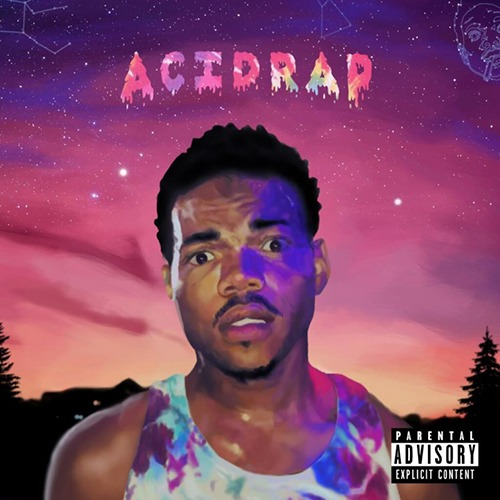

Melody's Favorites
Hi! My name is Melody Ruiz and I like watching shows that involve the supernatural world. Why?
1. Has HOT guys
2. Romance
3. Blood/fights
4. Unrealistic
The Vampire Diaries
A young teen struggles to make a decision between two vampire brothers and their supernatural lives.
Soon after she discovers the truth her whole world turns upside down.

Teen Wolf

Supernatural

The Secret Circle

